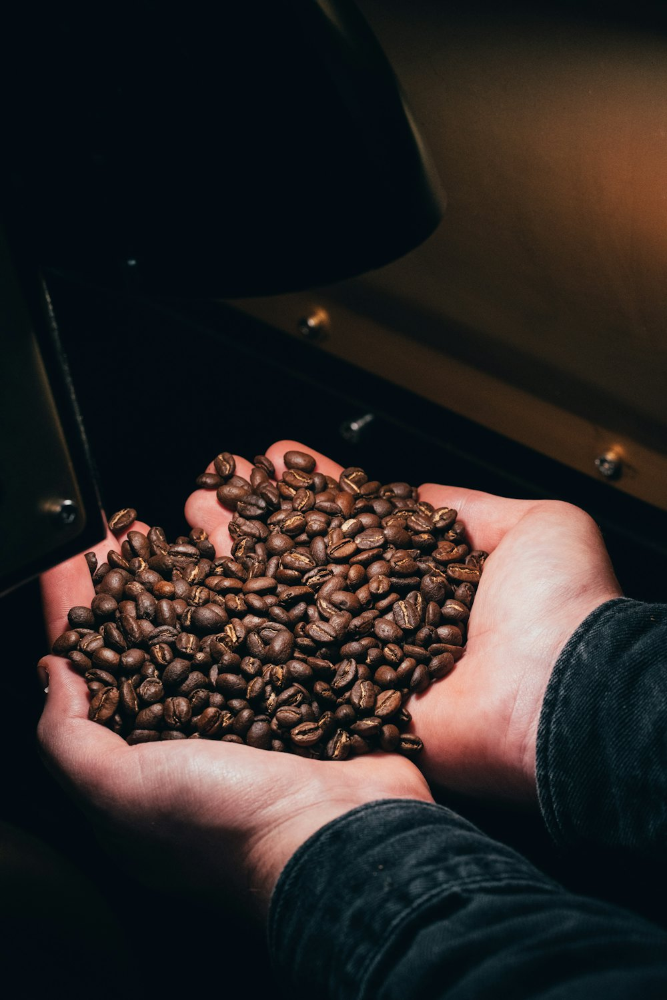

STORY
新しい焙煎所、
祖師ヶ谷大蔵に。A new roastery
in Soshigaya-Okura.
2024年10月1日、祖師ヶ谷大蔵に新しい焙煎所兼カフェをオープンしました。スペシャルティコーヒー専門。店内でも、ご自宅でも、いいコーヒーの時間を。On October 1, 2024 we opened our new roastery and café in Soshigaya-Okura. Specialty coffee only — for a good coffee time in the café or at home.
2024.10新焙煎所オープンNew roastery
100%スペシャルティSpecialty
JAPAN全国に発送Ships nationwide
